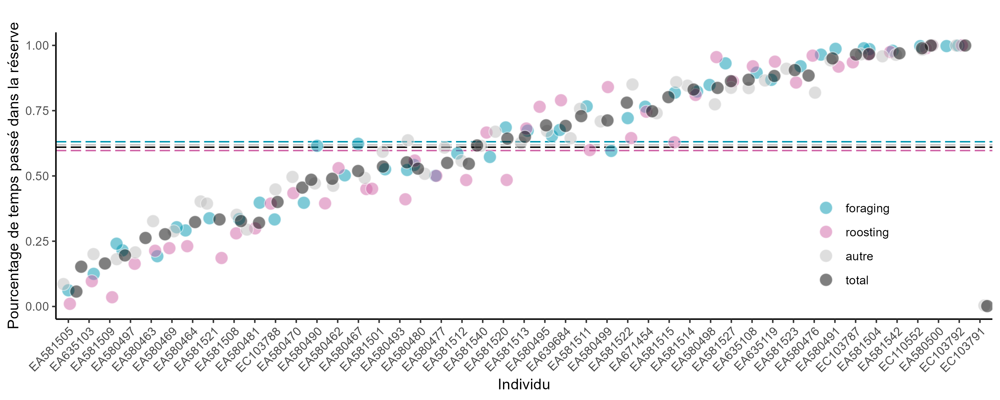
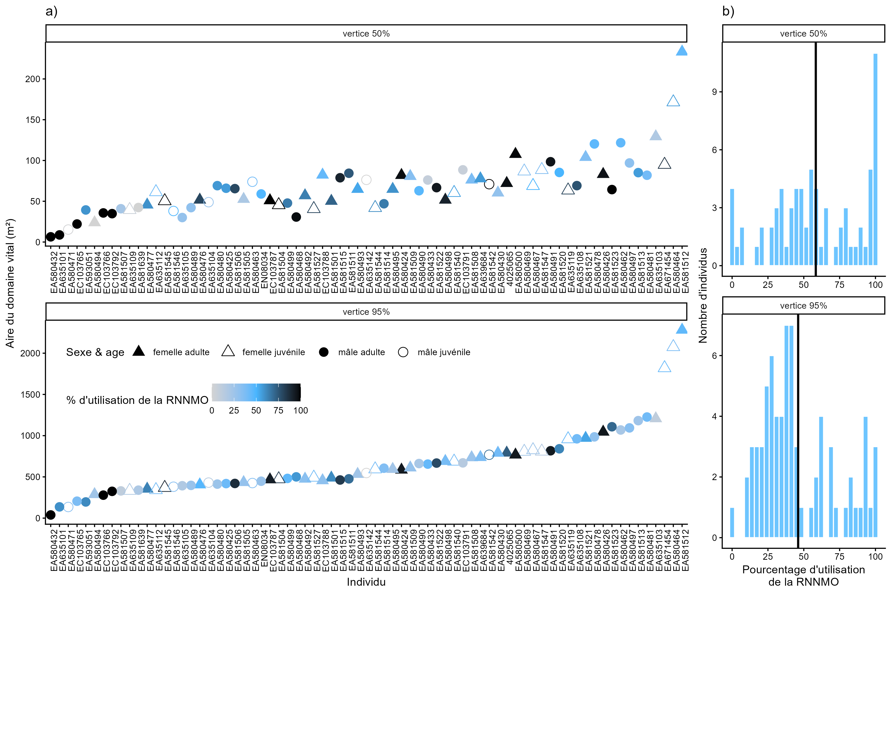
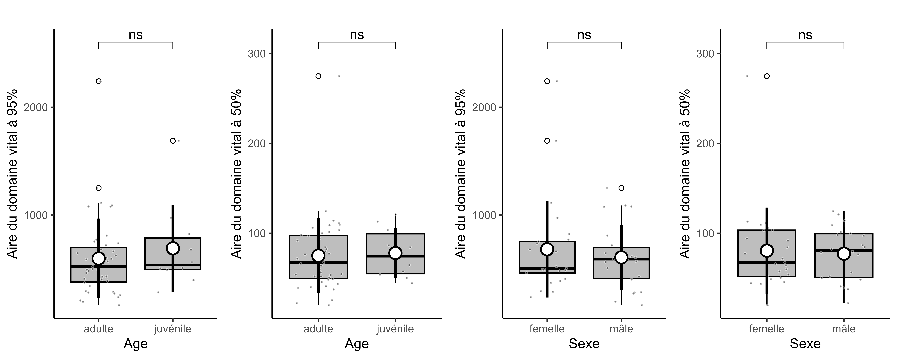
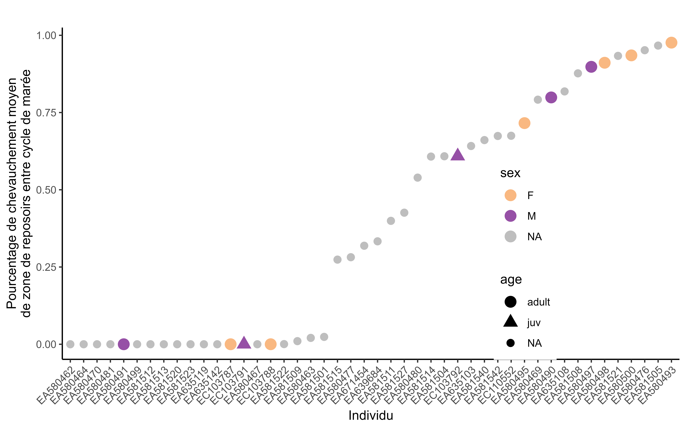

Utilisation de l’espace par le Courlis cendré dans le site fonctionnel de la réserve de Moëze-Oléron
Messages clés
Constituendi autem sunt qui sint in amicitia fines et quasi termini diligendi. De quibus tres video sententias ferri, quarum nullam probo, unam, ut eodem modo erga amicum adfecti simus, quo erga nosmet ipsos, alteram, ut nostra in amicos benevolentia illorum erga nos benevolentiae pariter aequaliterque respondeat, tertiam, ut, quanti quisque se ipse facit, tanti fiat ab amicis.
Alii nullo quaerente vultus severitate adsimulata patrimonia sua in inmensum extollunt, cultorum ut puta feracium multiplicantes annuos fructus, quae a primo ad ultimum solem se abunde iactitant possidere, ignorantes profecto maiores suos, per quos ita magnitudo Romana porrigitur, non divitiis eluxisse sed per bella saevissima, nec opibus nec victu nec indumentorum vilitate gregariis militibus discrepantes opposita cuncta superasse virtute.
Haec ubi latius fama vulgasset missaeque relationes adsiduae Gallum Caesarem permovissent, quoniam magister equitum longius ea tempestate distinebatur, iussus comes orientis Nebridius contractis undique militaribus copiis ad eximendam periculo civitatem amplam et oportunam studio properabat ingenti, quo cognito abscessere latrones nulla re amplius memorabili gesta, dispersique ut solent avia montium petiere celsorum.
Contexte et objectifs scientifiques
Créée en 1985, la Réserve Naturelle Nationale de Moëze-Oléron (RNNMO, Figure 1), située dans le département de la charente maritime, s’étend sur près de 6 800 hectares entre le continent et l’île d’Oléron. Gérée par la Ligue pour la Protection des Oiseaux (LPO-France), elle abrite chaque année jusqu’à 100 000 oiseaux d’eau, dont de nombreux limicoles migrateurs et hivernants.
Située au cœur du bassin fonctionnel des pertuis charentais, la réserve relie estrans, marais et zones conchylicoles, formant un maillon essentiel des grands couloirs migratoires atlantiques (Figure 2) et contribuant à la conservation des oiseaux d’eau à l’échelle internationale.
.jpg)
Depuis 2015, la Ligue pour la Protection des Oiseaux (LPO-France), en collaboration avec les laboratoires LIttoral ENvironnement et Sociétés (LIENSs, UMR 7266, CNRS - Université de La Rochelle) et le Centre d’Écologie et des Sciences de la Conservation (CESCO, UMR 7204, CNRS - MNHN - Sorbonne Université), bague et équipe de GPS des Courlis cendrés au sein de la Réserve Naturelle Nationale de Moëze-Oléron (Figure 3).

L’objectif général de cette étude est de mieux comprendre l’utilisation de l’espace par ces oiseaux dans un site fonctionnel comprenant le bassin de Marennes et le marais de Brouage (Figure 5). Cette recherche s’inscrit dans un contexte de recul du trait de côte, entraînant une maritimisation progressive de la réserve naturelle, et de fortes pressions anthropiques (chasse, pêche à pied, ostréiculture). Il s’agit d’identifier et de proposer des zones prioritaires à préserver pour l’accueil des limicoles.
À partir de l’analyse des données issues de balises GPS posées sur plusieurs dizaines de courlis cendrés dans la réserve, l’objectif principal est de produire un atlas dynamique décrivant l’usage de l’espace par ces oiseaux, en lien avec les activités humaines et les effets de la maritimisation.
Le travail présenté ici propose une cartographie fine de la répartition des courlis dans le site fonctionnel de la réserve de Moëze-Oléron en fonction des fluctuations environnementales et des perturbations anthropiques détectées et mesurables sur la zone.
Cette étude s’inscrit dans le cadre du projet “Adaptation des limicoles aux changements climatiques”, financé par l’Etat (Fonds Vert) et la Région Nouvelle-Aquitaine (Fonds Européen de Développement Régional).
Le courlis cendré

Morphologie
Le Courlis cendré (Numenius arquata) est le plus grand limicole d’Europe. Longueur : 55–65 cm. Envergure : 90–110 cm. Poids : 600–1200 g. Plumage brun-gris tacheté, bec long (jusqu’à 19 cm), courbé vers le bas. Dimorphisme sexuel marqué ; la femelle est généralement plus grande avec un bec plus long.
Comportement général
Espèce discrète, au comportement prudent. Territorial en période de reproduction, grégaire en dehors de celle-ci. Chant flûté, ascendant et mélancolique, souvent émis en vol.
Régime alimentaire
Régime invertivore dominant : vers de terre, insectes, mollusques, crustacés. Complété ponctuellement par des graines et baies. Alimentation au sol ou par sondage dans la vase ou les prairies humides. Habitat
- Habitat de reproduction : prairies humides, landes, tourbières, marais, zones agricoles extensives.
- Habitat d’alimentation : vasières intertidales, estuaires, prés salés, prairies humides, pâtures.
- Habitat de repos (hors reproduction) : vasières, zones littorales, lagunes, marais salants.
Saison de reproduction
Avril à juillet. Nid au sol, souvent dissimulé dans la végétation. Ponte de 3–4 œufs. Incubation ~28 jours. Émancipation des jeunes vers 5–6 semaines.
Migration
Migrateur partiel. Les populations du nord-est de l’Europe hivernent principalement en Europe occidentale et sur les côtes atlantiques africaines. En France, présence à l’année dans certaines régions littorales (ex. : Baie de Somme, estuaire de la Loire), migration marquée en automne et au printemps.
Effectifs de population
Population mondiale : estimée à 140 000 – 240 000 couples reproducteurs (équivalent à environ 280 000 – 480 000 individus matures).
Population européenne : estimée à 97 000 – 167 000 couples (BirdLife International, 2021).
Population française :
- Nicheurs : 2 200 à 2 800 couples (principalement dans le nord-ouest, Centre-Val de Loire, Grand Est).
- Hivernants : 20 000 à 30 000 individus, surtout sur le littoral atlantique et dans le sud-est.
Tendance : déclin modéré à marqué en Europe occidentale. Fort recul des effectifs nicheurs en France depuis les années 1980 (perte estimée à plus de 30 %).
Statuts de conservation
IUCN : Near Threatened (Quasi menacé) à l’échelle mondiale.
Europe : Annexe II de la Convention de Berne. Déclin confirmé dans plusieurs États membres.
France : Vulnérable. Espèce inscrite à l’arrêté ministériel du 26 juin 1987 fixant la liste des espèces de gibier dont la chasse est autorisée mais bénéficiant actuellement d’un moratoire de suspension de la chasse reconduit chaque année.
International : Annexe II de la Convention de Bonn (CMS). Annexe II.2 de la Directive Oiseaux (espèce chassable sous conditions).
La zone d’étude
La zone d’étude (voir Figure 5) est un rectangle de 623.5 km² qui s’étend :
- au Nord jusqu’à l’estuaire de la Charente,
- à l’Est jusqu’à la limite Est de la ville de Rochefort,
- au Sud jusqu’à l’estuaire de la Seudre,
- et à l’Ouest jusqu’à la facade Est de l’ile d’Oléron, englobant ainsi zone fonctionnelle du bassin de Marennes, la réserve de Moëze-Oléron et le marais de Brouage.
Périodes de suivi des individus
Les individus sont bagués et équipés de GPS au sein de la RNNMO (voir le site de baguage, épingle rouge Figure 5).
Le jeu de données analysé est constitué de XX point GPS enregistré entre 2016 et 2025 pour XX individus. Les données comportent XX femelles, XX mâles, XX adultes et XX juvéniles. L’âge et le sexe n’a pas été identifié pour XX individus.

Temps passé dans la réserve naturelle de Moëze-Oléron
Le pourcentage de temps moyen passé dans la RNNMO par individu est en moyenne de 61%, de 60% pour les comportements de repos uniquement, de 63% pour les comportements d’alimentation uniquement, et de 62% pour les autres comportements.

Domaines vitaux
Chaque individu a un domaine vital spécifique, avec un noyau d’activité représentant les zones de fréquentation la plus intense (50% des points GPS enregistrés), et un domaine vital plus étendu englobant 95 % de la surface d’utilisation (Figure 8).
Les individus ont des domaines vitaux (tous types de comportements confondus) moyen de XXm², avec une zone principale d’activité de XXm² (Figure 9).

La surface du domaine vital des individus ne varie pas en fonction de l’âge ni du sexe des individus.

Les principaux reposoirs

A chaque marée haute, les courlis cendrés remontent hors des vasières et se regoupent dans des zone de repos.
test téléchangement carte png
Reposoirs en fonction de l’age
Le courlis cendré est considéré comme juvénile de sa sortie du nid au 1er septembre de l’année suivant leur éclosion. Au delà de cette période, ils arborent leur plumage mature et sont considéré comme adulte.
Reposoirs en fonction du sexe
Reposoirs en fonction du calendrier
Reposoirs en fonction du mois de l’année
Reposoirs en fonction du jour et de la nuit
Reposoirs entre fonction de la hauteur d’eau
Les reposoirs peuvent varier en fonction de la hauteur d’eau lors des marées hautes (Figure 28, Figure 29, Figure 30).
Le marégraphe utilisé pour obtenir les hauteurs d’eau (en m) est celui de l’ile d’Aix en priorité, puis corrélation avec la cotinière et la rochelle quand il y a des trous dans les séries de données. La hauteur d’eau est moyennée pour chaque période du grain temporelle choisie (5 min). La variable choisi pour la hauteur d’eau est la variable “validé temps différé” en priorité, puis “brute temps différé”, puis “brute haute fréquence”. Les données de hauteurs d’eau ont été téléchargées via le site du SHOM.
Le type de de marée haute en fonction de la hauteur est définie comme :
- marée de mortes eaux : inférieur à 4.8m
- marée de vives eaux : entre 4.8m et 6.4m
- submersion de la lagune : supérieur à 6.4m
Le choix de ces seuils est choisi de manière empirique par la connaissance de l’influence des hauteurs d’eau sur les reposoirs de marée haute.
Les dates détectées de submersion de la lagune sont : XXX
Les principales zones d’alimentation
A chaque marée base, les courlis cendrés descendent sur l’estran (principalement) à la recherche de nourriture.

Zone d’alimentation en fonction des caractéristiques biologique des individus
Zone d’alimentation en fonction de l’age
Zone d’alimentation en fonction du sexe
Zone d’alimentation en fonction du calendrier
Zone d’alimentation en fonction du mois de l’année
Zone d’alimentation en fonction du jour et de la nuit
Utilisation de l’espace par les Courlis cendré lors d’évènements de vent extrêmes
/! autre variable extrème à ajouter ? roosting aussi ? !!!!!!!!!!!
Les données météorologiques sont issues du site météostat pour la station météorologique de La Rochelle.
Les évènements climatiques extrêmes (ECE) sont généralement définis comme les évènements d’intensité supérieure (ou inférieur) au quartile 95% des distributions du paramétres météorologiques (REF) sur la période 2015-2024.
Ici, les paramètres météorologiques étudiés sont :
- la vitesse moyenne journalière du vent
- l’orientation moyenne journalière du vent
A partir de ces deux paramètres météorologiques, 3 paramètres météorologiques extrêmes ont été calculés :
- les évènements de vent fort : ECE supérieur à 95%
- les évènements de vent de Nord-Ouest : orientation entre 270 et 360 degrés
- les évènements de vent fort de Nord-Ouest : ECE supérieur à 95% et d’orientation entre 270 et 360 degrés
L’utilisation de l’espace pour les comportements de repos et d’alimentation pendant les jours avec évènements extrêmes detectés sont comparés aux jours 7 jours avant les évènements extrêmes et considéré comme “normaux”.
Les vents de Nord-Ouest semblent ne pas avoir d’effet sur les comportements de repos ni d’alimentation, tout comme les vents forts sur les comportements de repos.
Seuls les résultats montrant l’influence des vents forts sur les comportements d’alimentation sont présentés ici.
Distance entre les reposoirs et les zones d’alimentation
La distance entre la zone d’alimentation et de repos a été estimé comme la distance entre les paires de centroïds géographiques individuels des zones d’alimentation et de repos à chaque cycle de marais (Figure 50).
Il y a une corrélation significative (p-value : 6.93e-16 ***) entre la distance individuelle moyenne alimentation-repos et sa variance : les individus qui font le plus loin en moyenne sont aussi ceux qui varient le plus dans la distance parcours à chaque cycle de marais.

Les distances à chaque cycle de marais des paires de centroïds individuels entre les zones d’alimentation et de repos ont été comparées entre les mâles et les femelles, les adultes et les juvéniles, et pendant ou hors péridoe de chasse (Figure 51).

Les juvéniles parcourent significativement plus de distance entre leurs zones d’alimentation et de repos que les adultes. Il n’y a pas de différence significative entre les mâles et les femelles. La distance entre la zone d’alimentation et de repos d’allonge lors de la période de chasse (et plus de variabilité ?).
Fidélité aux espaces au cours des cycles de marée
Afin d’estimer la fidélité à leurs zones, pour le repos, comme pour l’alimentation, des zones d’utilisation principale de l’espace sont estimées en fonction des années ou des mois, puis le chevauchement de ces zones est estimé deux à deux. Un fort chevauchement équivaut à une forte similarité entre les zones au cours du temps, ce qui équivaut à une forte fidélité à leurs zones.
La fidélité inter-annuelle aux espaces a également été estimé. Néanmoins, trop de variabilité inter-individuelle sont ressorties pour pouvoir tirer des conclusions de ces analyses.
Reposoirs

! Alimentation

Evitement des chasseurs et des zones de chasses
Chasse sur le Domaine Public Maritime
Effet de la période de chasse :
L’utilisation de l’espace par les Courlis cendrés pendant et hors période de chasse à pied sont comparés.
!!!!!! testé mais sans effet détecté : jour de chasse, seuil de chasse avec beaucoup de chasseur ou pas
Les données disponibles de comptage de chasseur sur le Domaine Public maritime (DPM) se restreignent à la plage de Saint-Froult. Les analyses sont donc faites uniquement dans la zone C autour de la zone principale de présence des chasseurs.
Également, afin de limiter les effets de variation saisonnière sur l’utilisation de l’espace, le jeu de données est restraint autour de la fermeture de la chasse : 15 dernier jour de la période de chasse (in), 15 premier jour après la fermeture de la chasse (out).
Les effets de la présence, ou non, de chasseur sur site, et du nombre de chasseur présents ont également été testé.
Aucun effet n’a pu être visuellement détecté sur l’utilisation de l’espace pour le repos et l’alimentation.
Chasse à la tonne
!!!!!! testé mais sans effets detecté : changement d’utilisation de l’espace quand fermeture de la chasse, avec zone de danger et zone de proximité > saison de chasse (sept-fev), saison + heure de chasse, periode d’étude de chasse (15j av/ap), periode d’étude + heure de chasse (15j av/ap),

Une tonne de chasse au gibier d’eau, Éguille-sur-Seudre, Charente-Maritime, France (crédit photo: Jean-Pierre Bazard).
La chasse à la tonne, est une méthode de chasse au gibier d’eau pratiquée depuis une installation fixe et dissimulée appelée tonne. Celle-ci est aménagée à proximité d’un plan d’eau artificiel (mare de tonne) dans le but d’attirer et de tirer les oiseaux migrateurs, principalement les anatidés (canards, oies), souvent de nuit.
La tonne est enterrée ou semi-enterrée et équipée pour permettre l’observation, l’attente prolongée et le tir. Des appelants vivants (canards domestiques dressés) ou artificiels (formes flottantes) sont disposés sur le plan d’eau pour simuler la présence d’un groupe et inciter les oiseaux sauvages à se poser.
Ces plans d’eau (appelé mare à la tonne) sont spécifiquement aménagés pour optimiser leur attractivité : contrôle de la végétation, entretien régulier, et gestion du niveau d’eau. Leur usage est réservé aux installations déclarées.
Cette pratique est fortement ancrée dans le patrimoine cynégétique local, notamment sur le littoral et les marais de Charente-Maritime. Toutefois, elle soulève des questions relatives à la pression exercée sur les espèces migratrices, à la conservation des zones humides, et à la cohabitation avec d’autres usagers de la nature.
Réglementation en Charente-Maritime :
- Période de chasse : ouverture généralement fin aout, fermeture fin février.
- Horaires de tir : Le tir de nuit est autorisé dans le cadre de la chasse à la tonne. En période anticipée (à partir du 17 août), le tir est interdit de 9h00 à 19h00 sur les territoires situés hors du domaine public maritime (DPM) et fluvial (DPF).
- Installations des tonnes : La tonne doit être déclarée auprès de la préfecture. Une distance minimale de 300 mètres est imposée entre deux tonnes. Les installations doivent répondre à des normes de sécurité et ne peuvent être déplacées sans autorisation.
- Appelants : L’utilisation d’appelants vivants est autorisée sous réserve de déclaration, baguage et respect des règles de détention (traçabilité, soins, conditions sanitaires). Les formes artificielles sont également admises.
Zones critiques
Discussion
Jeu de données et puissance statistique
Bien que ce jeu de données soit exceptionnel de par son nombre d’individus suivis (99 individus) et son échelle temporelle (10 ans), les analyses statistiques effectuées ici manques de puissance pour répondre avec précisions et plus de robustesse aux questions posées.
Notamment, les données sur les chasses (et la pêche) manquent de précisions et d’ampleur temporelles et géographiques.
Ce travail constitue une étape cruciale pour obtenir une image générale des comportements de Courlis cendré dans la région, mais cela ne pourra que bénéficier de plus d’années de suivi et de plus d’individus équipé, en parallèle d’une récolte plus fine, lorsque cela est possible, des données environnementales et des pressions anthropiques.
Protocole de d’échantillonnage des oiseaux équipés
Des contraintes techniques lié à l’écologie de l’espèce et aux autorisations de baguages ont contraint la capture des oiseaux équipés à s’est effectué sur la plage du grand travers, le long de la côte au sein de la réserve de Moëze-Oléron.
Ainsi donc, les oiseaux étudié ici on une utilisation de l’espace orienté autour de cette zone, représentant un biais important dans les analyses.
Il serait particulièrement interessant de poursuivre ce suivi en équipant des oiseaux sur d’autres sites autour de la réserve, notamment sur l’ile d’Oléron pour obtenir une vue globale généralisable à l’ensemble de la population de Courlis dans la région.
Matériels et Méthodes
temps passé dans la r&serve : Le temps passé dans la réserve est estimé comme le nombre de point GPS observés dans et hors réserve pour chaque individu. Chaque point représente 5 min de temps.
Assignation des comportements
Repos
Le comportement de repos est défini comme un point GPS d’une vitesse de déplacement inférieure ou égale à 0.5 Km/h et entre 2h avant et 2h après la marée hautes. La vitesse de déplacement pour chaque point GPS a été estimé par partir de la fonction speedfilter du package “adehabitatHR”.
Pour les deux méthodes, les reposoirs sont identifiés à l’aide de la fonction kernelUD du package “adehabitatHR” Calenge (2006).
Alimentation
Le comportement d’alimentation est défini comme un point GPS d’une vitesse de déplacement inférieure ou égale à 0.5 Km/h et entre 2h avant et 2h après la marée base. La vitesse de déplacement pour chaque point GPS a été estimé par partir de la fonction speedfilter du package “adehabitatHR”.
Les zones d’alimentation sont identifiées à l’aide de la fonction kernelUD du package “adehabitatHR” Calenge (2006).
Age
L’âge des individus est déterminé au baguage grâce au plumage des individus. Les individus juvéniles lors du baguage et de la pose du GPS deviennent adultes après le 1er septembre de l’année suivante. ## Sex
Les études sur la zone globale ont été effectuées avec un grain spatial large en grille de 100 m x 100 m. Les études sur les zones réduites A, B et C ont été effectués avec un grain spatial fin en grille de 10 m x 10 m.
Le détail des méthodes est disponible dans le document Readme du projet.
domaine vitaux
La distribution d’utilisation (Utilization Distribution, ou “UD”) est une fonction mathématique (une densité de probabilité) qui décrit la probabilité de présence d’un individu dans son environnement en fonction des points GPS qui lui ont été associés (Worton, 1995). Elle permet donc d’estimer les zones les plus fréquemment utilisées par un animal.
Les distributions d’utilisation de l’espace ont été estimé par la méthode dite du noyau (kernel), qui consiste à lisser les localisations individuelles afin de produire une carte continue de l’utilisation de l’espace. L’estimation par noyau repose sur un paramètre de lissage (bandwidth, nommé h), ici calculé selon la règle de Silverman, ajustée par un facteur de 1/2 (h/2) pour permettre des analyses à grain plus fin.
Les domaines vitaux (home range) ont ici été estimés (Figure 8) à l’aide des fonctions kernelUD et getverticeshr du package “adehabitatHR” Calenge (2006).
Les calculs ont été réalisés à partir de l’ensemble des points de localisation disponibles pour chaque individu, tous comportements confondus.
Deux niveaux de domaine vital sont définis pour chaque individu : - Le domaine vital étendu (à 95%) correspondant à l’enveloppe englobant 95 % de la surface d’utilisation - Le noyau d’activité (à 50%) représentant les zones de fréquentation la plus intense
Les données GPS
Nettoyage des données GPS
Le nettoyage des données issues des balises GPS a principalement été effectué à l’aide du package R adehabitat Calenge (2006).
En résumé, les points utilisés pour déterminer les comportements d’alimentation et de repos sont stationnaire (vitesse inférieure ou égale à 0.5 km/h). Pour que chaque individu ait le même poids dans les analyses, un point toutes les 5 min a été estimé pour chaque individus. Uniquement les points situés dans la zone d’étude ont été utilisés. Le temps entre chaque point de localisation sauvegardé par individu pouvant varier et provoquer des périodes de carences de données plus ou moins longues, les périodes où la balise GPS de l’oiseau a enregistré plus d’un point par période de 5 min ont été analysés (éviter d’analyser des positions GPS trop peu précises et de résolutions temporelles hétérogènes). Une limite basse de 100 points estimés par individus sur une période supérieure à 28 jours (deux cycles lunaires) a été appliquée pour maintenir une très haute qualité de suivi des individus pour les analyses.
Résumé des méthodes utilisées pour les analyses
Analyses 1
Ardeo, mihi credite, Patres conscripti (id quod vosmet de me existimatis et facitis ipsi) incredibili quodam amore patriae, qui me amor et subvenire olim impendentibus periculis maximis cum dimicatione capitis, et rursum, cum omnia tela undique esse intenta in patriam viderem, subire coegit atque excipere unum pro universis. Hic me meus in rem publicam animus pristinus ac perennis cum C. Caesare reducit, reconciliat, restituit in gratiam.
Analyses 2
Eius populus ab incunabulis primis ad usque pueritiae tempus extremum, quod annis circumcluditur fere trecentis, circummurana pertulit bella, deinde aetatem ingressus adultam post multiplices bellorum aerumnas Alpes transcendit et fretum, in iuvenem erectus et virum ex omni plaga quam orbis ambit inmensus, reportavit laureas et triumphos, iamque vergens in senium et nomine solo aliquotiens vincens ad tranquilliora vitae discessit.
Analyses 3
Illud tamen clausos vehementer angebat quod captis navigiis, quae frumenta vehebant per flumen, Isauri quidem alimentorum copiis adfluebant, ipsi vero solitarum rerum cibos iam consumendo inediae propinquantis aerumnas exitialis horrebant.
Analyses 4
Denique Antiochensis ordinis vertices sub uno elogio iussit occidi ideo efferatus, quod ei celebrari vilitatem intempestivam urgenti, cum inpenderet inopia, gravius rationabili responderunt; et perissent ad unum ni comes orientis tunc Honoratus fixa constantia restitisset.
Analyses 5
Et olim licet otiosae sint tribus pacataeque centuriae et nulla suffragiorum certamina set Pompiliani redierit securitas temporis, per omnes tamen quotquot sunt partes terrarum, ut domina suscipitur et regina et ubique patrum reverenda cum auctoritate canities populique Romani nomen circumspectum et verecundum.
Voir ci-dessous pour plus de détails.
Reproductibilité des analyses
Toutes les analyses, graphiques et cartes ont été produites à l’aide du logiciel R version XXX et RStudio version XXX.
L’ensemble des codes produits pour les analyses sont à retrouver ici : Github de Suzanne Bonamour
- Lisez le READme
Voir le READme pour les détails sur les jeux de données et les méthodes.
- Les données analysées
Toutes les données utilisées sont disponibles ici : XX
Cloner le dépôt
git clone [CourlisServeur](https://github.com/SuzanneBonamour/CourlisServeur.git)Installer les dépendances
Ouvrez R et exécutez :
- Lancer les scripts
Tous les scripts pour le nettoyage des données GPS, les analyses spatiales et les cartographies sont disponibles sur le github repository XX. Afin de reproduire les résultats, faire tourner les scripts les uns après les autres par ordre alphabétique “A_Courlis_GPS_x”, puis “B_Courlis_ENV_x”, etc…
Bibliographie
- Bakker, Wiene, et al. (2021) Connecting foraging and roosting areas reveals how food stocks explain shorebird numbers. Estuarine, Coastal and Shelf Science 259 (2021): 107458.
- Calenge, C., (2006) The package “adehabitat” for the R software: a tool for the analysis of space and habitat use by animals. Ecol. Model. 197 (3), 516–519.
Auteur.ices, affiliations et contributions
Analyses statistiques et spatiales
- Suzanne Bonamour (LPO France)
- Gwenael Quaintenne (LPO France)
Travail de terrain, capture et baguage des oiseaux
- Pierre Rousseau (RNN Moëze-Oléron)
- Loïc Jomat (RNN Moëze-Oléron)
- Adrien Chaigne (RNN Moëze-Oléron)
- Pierrick Bocher (RNN Moëze-Oléron)
- Frédéric Jiguet (RNN Moëze-Oléron)
- et beaucoup d’autre personnes !
Rédaction
- Suzanne Bonamour (LPO France)
Recherche de financements et partenaires
- Adrien Chaigne (RNN Moëze-Oléron)
Comité scientifique
- Pierrick Bocher (Univ. La Rochelle)
- Frédéric Jiguet (MNHN, CESCO, Paris)
- Gwenael Quaintenne (LPO France)
Pour toutes questions, contacter Adrien Chaigne adrien.chaigne@lpo.fr ou Suzanne Bonamour suzanne.bonamour@lpo.fr.